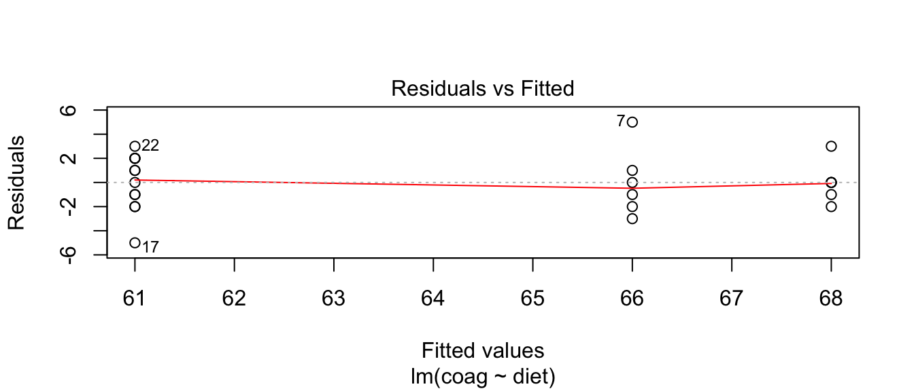
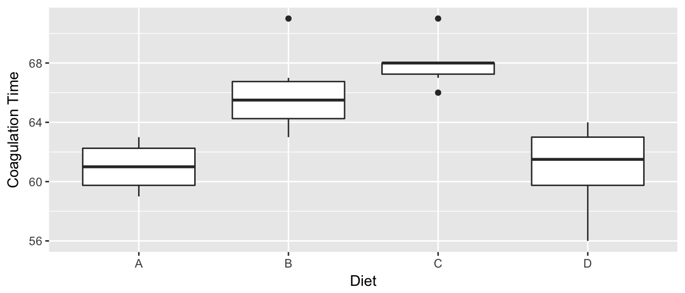
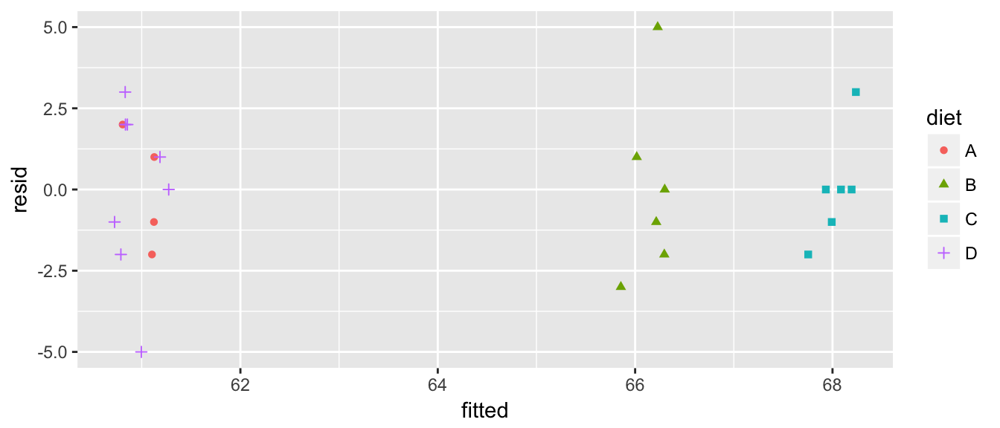

Chapter 8 One way ANOVA
# Load the libraries I'll use
library(faraway)
library(ggplot2)
library(dplyr)
library(multcompView)Given a categorical covariate (which I will call a factor) with \(I\) levels, we are interested in fitting the model \[y_{ij}=\mu+\tau_{i}+\epsilon_{ij}\] where \(\epsilon_{ij}\stackrel{iid}{\sim}N\left(0,\sigma^{2}\right)\), \(\mu\) is the overall mean, and \(\tau_{i}\) are the offset of factor level \(i\) from \(\mu\). Unfortunately this model is not identifiable because I could add a constant (say \(5\)) to \(\mu\) and subtract that same constant from each of the \(\tau_{i}\) values and the group mean \(\mu+\tau_{i}\) would not change. There are two easy restrictions we could make to make the model identifiable:
Set \(\mu=0\). In this case, \(\tau_{i}\) represents the expected value of an observation in group level \(i\). We call this the “cell means” representation.
Set \(\tau_{1}=0\). Then \(\mu\) represents the expected value of treatment \(1\), and the \(\tau_{i}\) values will represent the offsets from group 1. The group or level that we set to be zero is then referred to as the reference group. We can call this the “offset from reference” model.
We will be interested in testing the null and alternative hypotheses \[\begin{aligned} H_{0}:\;\;y_{ij} &= \mu+\epsilon_{ij} \\ H_{a}:\;\;y_{ij} = \mu+\alpha_{i}+\epsilon_{ij} \end{aligned}\]
8.1 An Example
We look at a dataset that comes from the study of blood coagulation times: 24 animals were randomly assigned to four different diets and the samples were taken in a random order. The diets are denoted as \(A\),\(B\),\(C\),and \(D\) and the response of interest is the amount of time it takes for the blood to coagulate.
data(coagulation)
ggplot(coagulation, aes(x=diet, y=coag)) +
geom_boxplot() +
labs( x='Diet', y='Coagulation Time' )
Just by looking at the graph, we expect to see that diets \(A\) and \(D\) are similar while \(B\) and \(C\) are different from \(A\) and \(D\) and possibly from each other, too. We first fit the offset model.
m <- lm(coag ~ diet, data=coagulation)
summary(m)##
## Call:
## lm(formula = coag ~ diet, data = coagulation)
##
## Residuals:
## Min 1Q Median 3Q Max
## -5.00 -1.25 0.00 1.25 5.00
##
## Coefficients:
## Estimate Std. Error t value Pr(>|t|)
## (Intercept) 6.100e+01 1.183e+00 51.554 < 2e-16 ***
## dietB 5.000e+00 1.528e+00 3.273 0.003803 **
## dietC 7.000e+00 1.528e+00 4.583 0.000181 ***
## dietD 2.991e-15 1.449e+00 0.000 1.000000
## ---
## Signif. codes: 0 '***' 0.001 '**' 0.01 '*' 0.05 '.' 0.1 ' ' 1
##
## Residual standard error: 2.366 on 20 degrees of freedom
## Multiple R-squared: 0.6706, Adjusted R-squared: 0.6212
## F-statistic: 13.57 on 3 and 20 DF, p-value: 4.658e-05Notice that diet \(A\) is the reference level and it has a mean of \(61\). Diet \(B\) has an offset from \(A\) of \(5\), etc. From the very small F-statistic, we conclude that simple model \[y_{ij}=\mu+\epsilon_{ij}\] is not sufficient to describe the data.
8.2 Degrees of Freedom
Throughout the previous example, the degrees of freedom that are reported keeps changed depending on what models we are comparing. The simple model we are considering is \[y_{ij}\sim\mu+\epsilon_{ij}\] which has 1 parameter that defines the expected value versus \[y_{ij}\sim\mu+\tau_{i}+\epsilon_{ij}\] where there really are only \(4\) parameters that define the expected value because \(\tau_{1}=0\). In general, the larger model is only adding \(I-1\) terms to the model where \(I\) is the number of levels of the factor of interest.
8.3 Diagnostics
It is still important to check the diagnostics plots, but certain diagnostic plots will be useless. In particular, we need to be concerned about constant variance among the groups and normality of the residuals.
library(ggfortify)
m <- lm(coag ~ diet, data=coagulation)
autoplot(m, which=2) # QQ plot
The residual plots however, might need a little bit of extra work, because there are only four possible predicted values (actually \(3\) because group \(A\) and \(D\) have the same predicted values). Note that we actually have \(n=24\) observations, but I can only see 16 of them.
plot(m, which=1) # Residals vs fitted
To remedy this, we will plot the residuals vs fitted by hand, and add a little bit of random noise to the fitted value, just so that we don’t have points stack up on top of each other. Lets also add a different shape for each diet.
coagulation$fitted <- predict(m)
coagulation$resid <- resid(m)
ggplot(coagulation, aes(x=fitted, y=resid, shape=diet, color=diet)) +
geom_point(position=position_jitter(w=0.3, h=0))
8.4 Pairwise Comparisons
After detecting differences in the factor levels, we are often interested in which factor levels are different from which. Often we are interested in comparing the mean of level \(i\) with the mean of level \(j\). As usual we let the vector of parameter estimates be \(\hat{\boldsymbol{\beta}}\) then the contrast of interested can be written as \[\boldsymbol{c}^{T}\hat{\boldsymbol{\beta}}\pm t_{n-p}^{1-\alpha/2}\;\hat{\sigma}\sqrt{\boldsymbol{c}^{T}\left(\boldsymbol{X}^{T}\boldsymbol{X}\right)^{-1}\boldsymbol{c}}\] for some vector \(\boldsymbol{c}\).
Unfortunately this interval does not take into account the multiple comparisons issue (i.e. we are making \(I(I-1)/2\) contrasts if our factor has \(I\) levels). To account for this, we will not use a quantile from a t-distribution, but from Tukey’s studentized range distribution \(q_{n,n-I}\) divided by \(\sqrt{2}\). The intervals we will use are: \[\boldsymbol{c}^{T}\hat{\boldsymbol{\beta}}\pm\frac{q_{n,n-I}^{1-\alpha/2}}{\sqrt{2}}\;\hat{\sigma}\sqrt{\boldsymbol{c}^{T}\left(\boldsymbol{X}^{T}\boldsymbol{X}\right)^{-1}\boldsymbol{c}}\]
There are several ways to make R calculate this interval (See the contrasts chapter for a more general treatment of this.), but the easiest is to use TukeyHSD(). This function will calculate all of these pairwise intervals using the above formula, which is commonly known as Tukey’s Honestly Significant Differences. This function expects to receive output from the aov() function. The aov() is similar to lm() but does not accept continuous covariates in the model. Because it is possible to convert a lm output object to an aov object, I typically will do the following
m <- lm(coag ~ diet, data=coagulation) # use the lm() function as usual
Pvalues <- TukeyHSD( aov(m), level=.90 ) # convert to the format that TukeyHSD likes...
Pvalues## Tukey multiple comparisons of means
## 95% family-wise confidence level
##
## Fit: aov(formula = m)
##
## $diet
## diff lwr upr p adj
## B-A 5 0.7245544 9.275446 0.0183283
## C-A 7 2.7245544 11.275446 0.0009577
## D-A 0 -4.0560438 4.056044 1.0000000
## C-B 2 -1.8240748 5.824075 0.4766005
## D-B -5 -8.5770944 -1.422906 0.0044114
## D-C -7 -10.5770944 -3.422906 0.0001268Here we see that diets \(A\) and \(D\) are similar to each other, but different than \(B\) and \(C\) and that \(B\) and \(C\) are not statistically different from each other at the \(0.10\) level.
8.4.1 Presentation of Results
The display of TukeyHSD is pretty annoying and often I want to turn the vector of adjusted p-values into a matrix of p-values. We want a matrix that is \(p \times p\).
# Convert to a matrix of adjusted p-values
Pmatrix <- vec2mat( Pvalues$diet[, 'p adj'] )
Pmatrix## B C D A
## B 1.000000000 0.4766005178 0.0044113688 0.0183282757
## C 0.476600518 1.0000000000 0.0001267866 0.0009576856
## D 0.004411369 0.0001267866 1.0000000000 1.0000000000
## A 0.018328276 0.0009576856 1.0000000000 1.0000000000From this matrix of adjusted p-values, there are many functions that will be helpful. One very common thing is to use a lettering scheme that indicates which groups are different. So if two groups share a letter, they are not significantly different.
multcompLetters(Pmatrix)## B C D A
## "a" "a" "b" "b"To make our lives easier while making graphs, we really want to be able to add these back into our original data frame. Unfortunately the multcompView package that does this doesn’t really make it easy to do this. So I wrote us a little function that will suffice:
#' Create a data frame with significant groupings
#'
#' This function runs TukeyHSD on the input model and then creates a data frame
#' with a column for the factor and a second for the Significance Group
#'
#' @param model The output of a lm() or aov() call that can be coerced to an aov object.
#' @param variable The variable of interest.
#' @output A data frame with a column for factor and another for the signicance group.
make_TukeyHSD_letters <- function(model, variable){
Tukey <- TukeyHSD(aov(model))[[variable]]
temp <- Tukey[,'p adj'] %>%
vec2mat() %>%
multcompLetters()
out <- data.frame(group = names(temp$Letters), SigGroup=temp$Letters)
colnames(out)[1] <- variable
out
} Now that the function is defined, we can happily use it.
make_TukeyHSD_letters(m, 'diet') ## diet SigGroup
## B B a
## C C a
## D D b
## A A bThis is useful, but it will be more useful when I merge this small data frame with the original data and then each observation will have an associated significance group.
coagulation <- coagulation %>%
left_join( make_TukeyHSD_letters(m, 'diet') )## Joining, by = "diet"ggplot(coagulation, aes(x=diet, y=coag, color=SigGroup)) +
geom_boxplot() +
geom_text( aes(label=SigGroup), y=71.5)
8.5 Exercises
- Use the dataset
chickwtsin thefarawaypackage. This was an experiment to determine which feed types result in the largest chickens. A set of 71 chicks were all randomly assigned one of six feed types and their weight in grams after six weeks was recorded. Determine whether there are differences in the weights of chickens according to their feed. Perform all necessary model diagnostics and examine the contrasts between each pair of feed levels. Summarize these results.